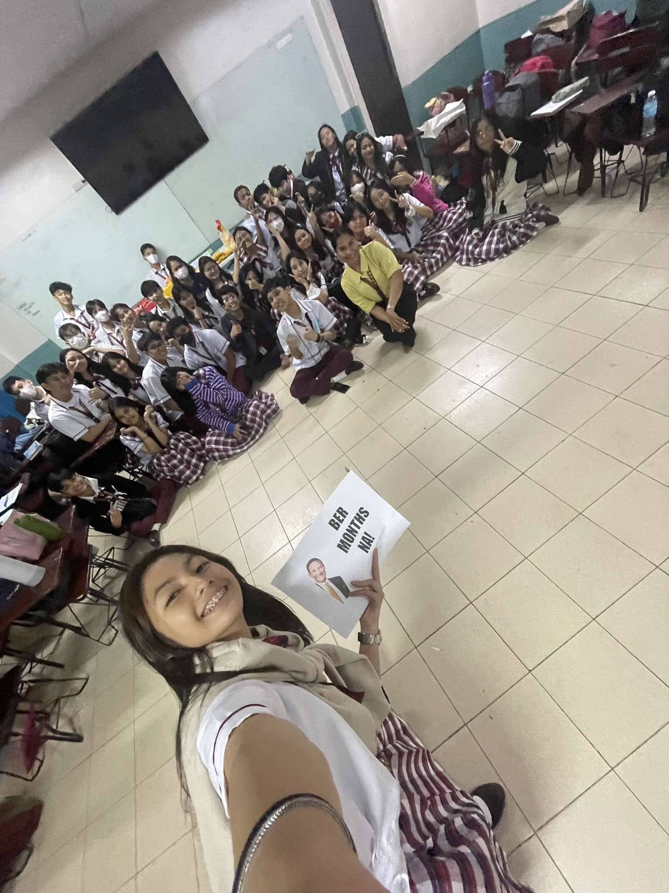
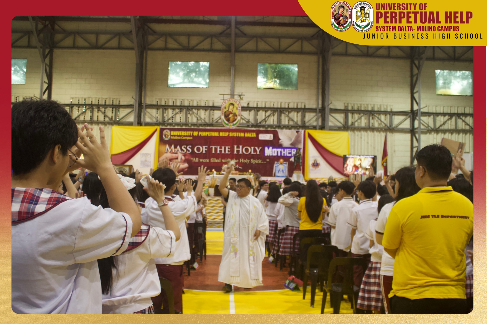
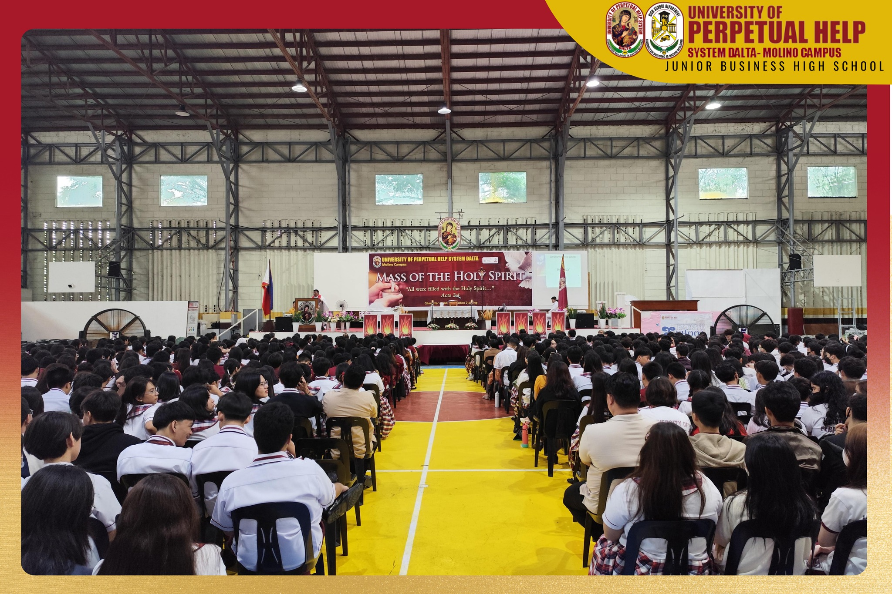
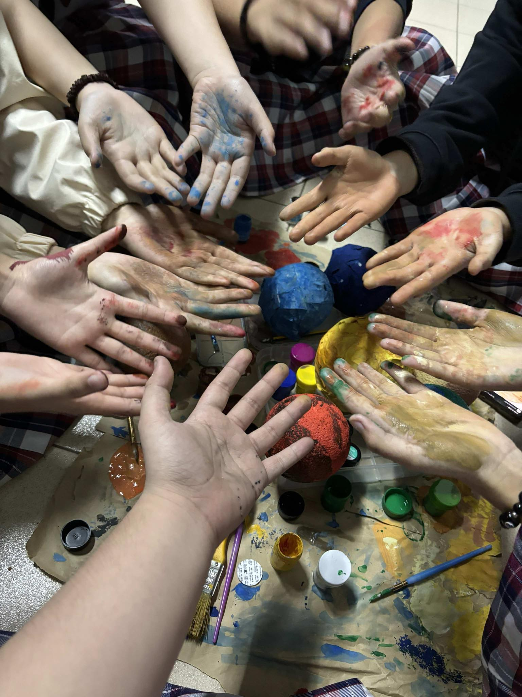
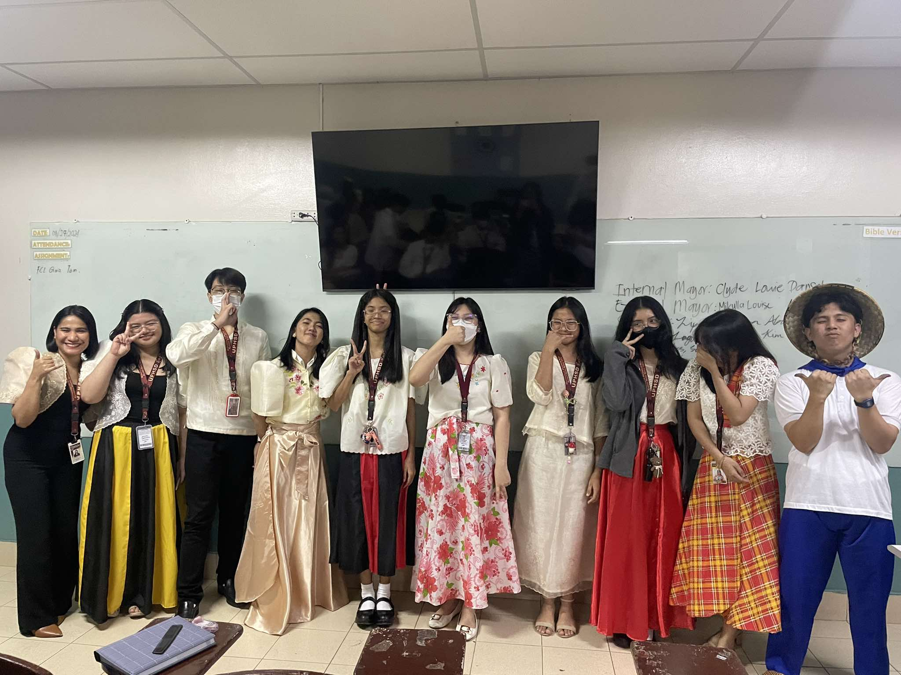
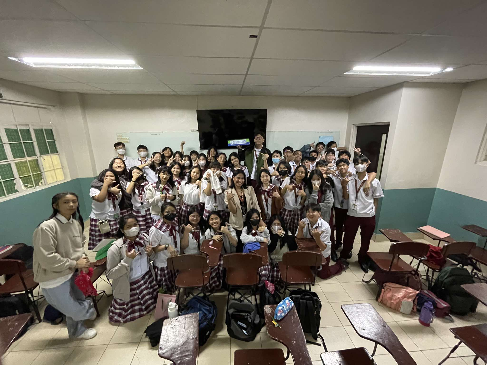
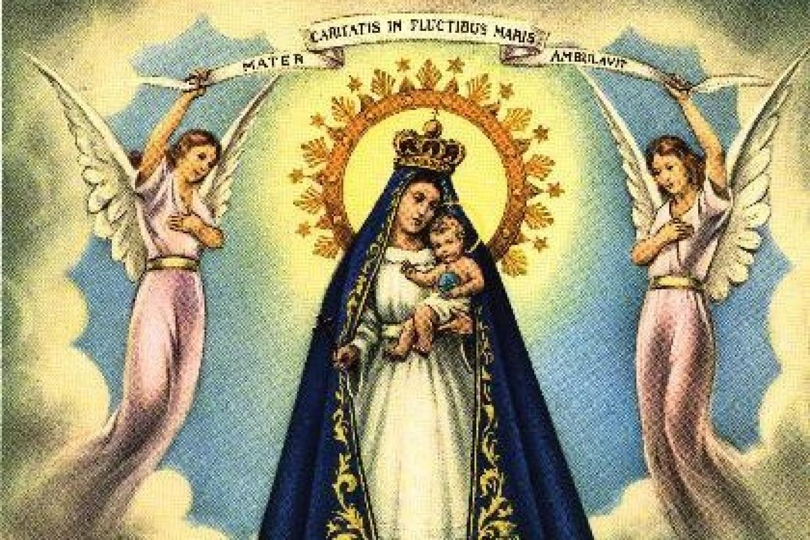

CHARITY'S VISION
A gas is a substance that is in a gaseous, or vaporous, state of matter. The term gas is also used in reference to the state itself when applied to matter that has the properties of a gaseous substance. Gas is one of four natural states of matter, along with liquid, solid and plasma. A gas has no fixed shape or volume.
The blessed section that is "Our Lady of Charity - 8" is and shall be known to be extremely active and participative in various activities and events. This has been proven to be true due to the intense and passionate participation seen thus far. Here are some examples of activities the section has participated in for the better part of the first quarter are:
THE EVENTS
BIRTHDAY CELEBRATION OF THE BLESSED VIRGIN MARY

The University of Perpetual Help System DALTA celebrated on September 4, since it was not possible to celebrate on the exact date; September 8. The Catholic Church too celebrates the birth of the Blessed Virgin Mary, Mother of God! This feast day is celebrated exactly nine months after the Solemnity of the Immaculate Conception on December 8. Much effort was exerted when it came to designing the classroom, making it homely and welcoming.
THE BLESSED MASS OF THE HOLY MOTHER

The Mass of the Holy Mother was celebrated in order to honor the Blessed Virgin Mary. The preaching was notably fiery and passionate, and holy water was soon sprinkled on the heads of Perpetualites alike. All of Charity participated by reflecting on their actions and listening intently.
THE BLESSED MASS OF THE HOLY SPIRIT

The Mass of the Holy Spirit proved to be a mean to encourage divine intervention in the lives of all of the students. This was to show reverence to the Lord most High and to the Holy Spirit that continues to guide each believer through trying times.
THE MATHSCI-YA WEEK

The MathSci-Ya Week was an incredibly informative and fascinating event that was filled with much collaboration. From the props, wig and makeup for the "Young Scientist Look-Alike" to the Rubik's Cube Tournament, each moment was filled with much joy, stress and laughter. This blessed section indeed reaped many blessings during this event!
THE CLASSROOM OFFICERS & THE CLASSROOM
The blessed section that is "Our Lady of Charity - 8" is and shall always be dominantly democratic and considerate when it comes to the opinions of each student. To ensure order and peace in the classroom, multiple rules and regulations are created and enforced by the elected classroom officers. The classroom is and aims to be a safespace where anyone can freely express their ideas.

THE CLASS

OUR LADY OF CHARITY
Our Lady of Charity (Latin: Nostra Domina Charitatis) is a celebrated Marian title of the Blessed Virgin Mary venerated in many Catholic countries. Various similar Marian images can be found in Cuba, France, Italy, Mexico, the Philippines, Malta, Spain and the United States of America. Nuestra Señora de la Caridad is among Cuba's most treasured objects – representing hope and salvation in the face of misfortune for Catholic and non-Catholics alike.

Then they alllll lived happily ever afterrr,
THE END 🫶